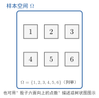

样本空间
一句话定义
样本空间是一个随机试验全部可能结果所成的集合，记作 ，其中每个结果称为一个样本点 。
定性
给一个随机现象做”全盘点”。掷一枚骰子之前，先别管这次是几点，而是把”这次可能出现的一切”摊开：1、2、3、4、5、6。这六样东西摆在一起，就是一个集合——它囊括了这次试验所有的下场，一个不多、一个不少。这个集合，就叫样本空间 。
它就像一份”可能性账单”。掷骰子是 ，抛硬币是 正, 反，抽一张扑克是从 A 到 K 的整套牌。它把”下次到底出什么”这个让人心痒的问题，翻译成了一件干净的事：下次的结果只会从这张账单里挑，绝不会超纲。有了账单，后面所有”问概率”的活儿才有准确的舞台。
它在知识体系里的位置：样本空间是概率论的第一个地基。事件是它的子集，概率是定义在它上面的一种”比重”，随机变量是把它的元素映成数。你甚至可以这样记——样本空间是全集，事件是它的子集，概率是给子集称重。没有它，事件无从谈”包含在哪”，概率无从谈”多大”。
这里有个很反直觉、但极重要的点：样本空间不是”天然的”，而是”你选的”。同一个掷骰子动作，你若只关心点数，；你若只关心”奇还是偶”，奇, 偶；你若关心”点数是否大于 3”，不大于, 大于。试验动作没变，样本空间却换了。所以构造 的本质是选定你要观察的”结果口径”，口径一变，地板就换。

图：掷一颗骰子的样本空间——六个样本点 1~6 构成全集 ，既可用列举法写出，也可用图示逐个摆出。样本点两两互斥、加起来覆盖全部可能。
数学表达
设随机试验为 ，则样本空间是所有可能结果做成的集合，用列举或描述两种方式之一表达：
左式是列举法，适合结果有限且数量不多时，逐项列出； 是各个样本点，总数 就是样本点的个数。右式是描述法，适合结果很多甚至无穷时，用一句”判据”把属于 的成员圈出来——比如” 是非负实数”能一眼划出电子元件寿命的全部可能。
符号体系要理清： 是大写的全集， 是其中的单个元素，两者是”集合—元素”关系。 里的元素还有两个软性约定——互斥（任意两个样本点不能同时出现，一次试验只能落在其中一个上）与完备（所有样本点并起来就是 ，总有一个会出现）。这两个约定看似琐碎，其实是把”可能性”整理成一套不重叠、不遗漏的完整分格，后面概率的加法公式全靠它们托底。
关键性质
-
样本点两两互斥。 为什么——因为一次试验只能取到一个结果，取到 3 就不可能同时取到 5。互斥保证了样本点之间不重叠，累加占比时不会重复计数，这是概率可加性的前提。
-
样本点并集即为全集。 为什么——试验必然产生一个结果，而这个结果必在 里，所以全部样本点合起来”用力一拼”就是 本身，无遗漏。这保证了”必有一个结果发生”，即必然事件的完备性。
-
样本空间取决于观察口径。 为什么——“随机”是把一个动作放进某个结果集合去考察，关注点不同，划定的可能结果就不同。同一试验可以因目的不同而取不同 ，这不是矛盾，而是”口径”的自然结果。
-
样本点是”最小不可再分”的结果。 为什么——从观察口径看，样本点已细致到不能再拆（如”掷骰子出 3”，无法再分成更细的、属于同一口径的结果）。更细的划分意味着新的、更大的 。所以样本点是针对当前口径的原子单元。
推导
现在把”为什么会有一套完整、不重叠的 “亲手理出来——不是接受它的定义，而是看清它为什么只能是这个样子。
先抛一个问题：掷一枚均匀骰子，结果 1 到 6 都有可能。我们凭什么敢断言”可能结果的集合就是 “，而不会漏掉别的、也不会重复？这种”不重不漏”背后有没有必然性？
设物理（数学）场景。取掷骰子 ，观察”向上的点数”。我先界定观察口径：本次就看点数，取整数 1 到 6。把试验可能的去向想象成一排格子，每个格子放一个”可能落点”。
列依据。这里依据的是古典概型的两条结构约定：一是结果的确定性分格，骰子每一面朝上是互不相同的、清晰可辨的结果，不存在”介于 3 和 4 之间”的模糊态；二是覆盖性，骰子落定必有某一面朝上，六种局面至少出现一种，不会”哪面都不是”。
逐步演绎。第一步，由”可辨、互不相同”，我把这六个局面列成六个互斥的格子 ——它们两两不同，排除了任何重叠。第二步，由”落定必有一面朝上”，这六个格子恰好穷尽全部可能——不会出现第七种”都不是”的局面，排除了遗漏。第三步，把六个格子装进一个大筐 ，这筐就同时满足”不重叠”与”不遗漏”，成为完美覆盖整个试验可能性的集合。
回头看。结论清晰：样本空间不是我们随手写的，而是”结果互斥 + 覆盖全集”这两条推到极致后的必然形状。它所以能作为地基，正是因为它把一个随机试验的”可能性”整理成了数学上最干净的形式——一个互斥又完备的集合。这个形式随后让事件（子集）、概率（比重）都能在此基础上稳稳立起。
为什么重要
样本空间是概率论唯一的地基，重要性极硬。它的地位：事件是 的子集，概率是 上各子集”占比”的度量，随机变量是 的函数。整门概率论的所有对象都长在 这棵根上。
它的后果体现在工程与建模的每一步：你要算”某批次产品合格率”，必须先界定”这批产品抽检的所有可能结果”——这正是 ；你给元件寿命建模，必须先划出”寿命可取的全体”——那也是 。Ω 划错了，后面全错：口径选宽了，引入本不相关的可能；选窄了，丢掉真实存在的可能。样本空间的取定，是任何一个概率问题迈出的第一步，也是最决定成败的一步。
适用条件
构造样本空间，需满足三条前提：
-
结果要能界定清楚。 每个可能结果必须是明确、可判别的（“骰子出 3”）而非模糊的（“骰子出约 3”）。界定不清， 无从谈起。这是它的基本要求。
-
口径要事先定死。 观测哪个变量、要看哪些维度，必须先说清，否则 无法确定。同试验、不同口径会产生不同 ，所以构造前取舍口径是前提。
-
结果有限或可描述无限。 有限个可逐项列举；无限个（如寿命取非负实数）须能用一个判据描述。连”可能有哪些”都无法描述的对象，无法成其为 。
真实边界：样本空间是为了建模而构造的理想化全集。现实中试验可能有无穷多不可控的影响因素，我们只把”关注的、可区分的可能结果”纳入 ，其余忽略。这是抽象，也是概率模型的必然取舍——把无关的杂乱挡在 门外。
边界与误区
最容易错的是把样本空间当成”固定不变、天然存在”的东西。挖根因。
-
误区一：样本空间是唯一的、客观的。 根因：觉得”掷骰子”太朴素，好像 是唯一答案。正确区别： 由观察口径决定。同一次掷骰，关注点数、关注奇偶、关注大小，得到三个不同的 ，没有谁是”唯一正确”。样本空间是建模选择，不是事物固有属性。
-
误区二：样本点越多越好。 根因：误以为把可能结果分得越细越严谨。正确区别：分多细要看问题要什么。要算偶数概率，把 定为 奇,偶 已足够；非要把每个点数都塞进来，反而让后续事件定义变得绕。样本空间的粗细应匹配问题粒度，而非一味求细。
-
误区三：把”结果”和”样本点”划等号。 根因：口语里”结果”含糊，既可指单点（6）也可指一组（大于3）。正确区别：样本点是 的单个元素、最小单元；而通常说的”结果”若是复合的、宽泛的（大于3），它是 的子集，即事件，不是样本点。二者层级不同。
对照
最容易和样本空间混的是随机事件。两者只用一个关键差异就能分开：
样本空间是全集，随机事件是子集。
样本空间 是”全部可能”的大集合，是地板；随机事件 是 里我们关心的那一部分，是地板上的某块区域。 固定、唯一地框定整个试验； 则是按需从中切出的投影片段，可以在 内自由组合。一句话判断：问”这个结果的全体”→ 样本空间；问”某个关心的情况”→ 随机事件。这个层级差异决定了——样本空间是”归属的根基”，事件是”从根基上长出来的对象”；事件一定在 里，而 是所有事件共同的父集。
例子
我们用一个更典型的例子把样本空间落到手上。
掷两次硬币，观察每次的正反面。这次结果不是单一正反面，而是两次的先后组合。全部可能：第一次正第二次正（记 ）、正反（）、反正（）、反反（）。于是样本空间：
共 个样本点，两两互斥、覆盖全部。反推工程含义：你若是工程师，关心”至少一次正面”的概率，就把 从 里挑出来算占比（）。但请注意——若你的观察口径不是”两次正反”而是”正面的个数”，那么 就变成了 （对应反面都无反、恰一正、两正）。同一个抛两次的动作，两种口径得到两个 。这再次强调：样本空间不是天上掉下来的，是你按问题需要”圈定”的。口径决定地板，地板决定后面所有计算。